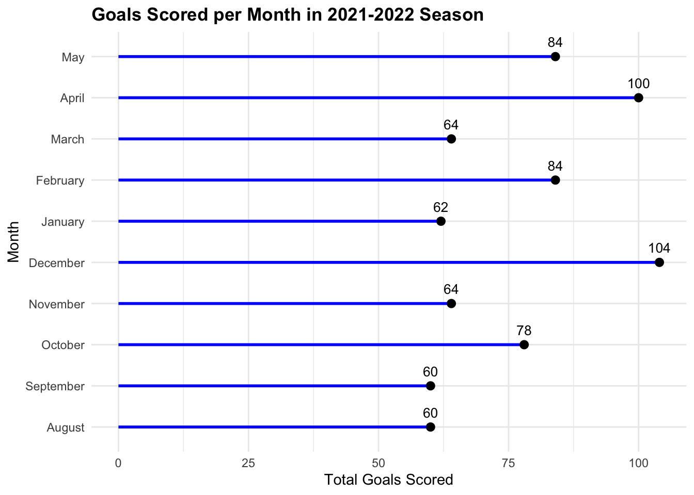
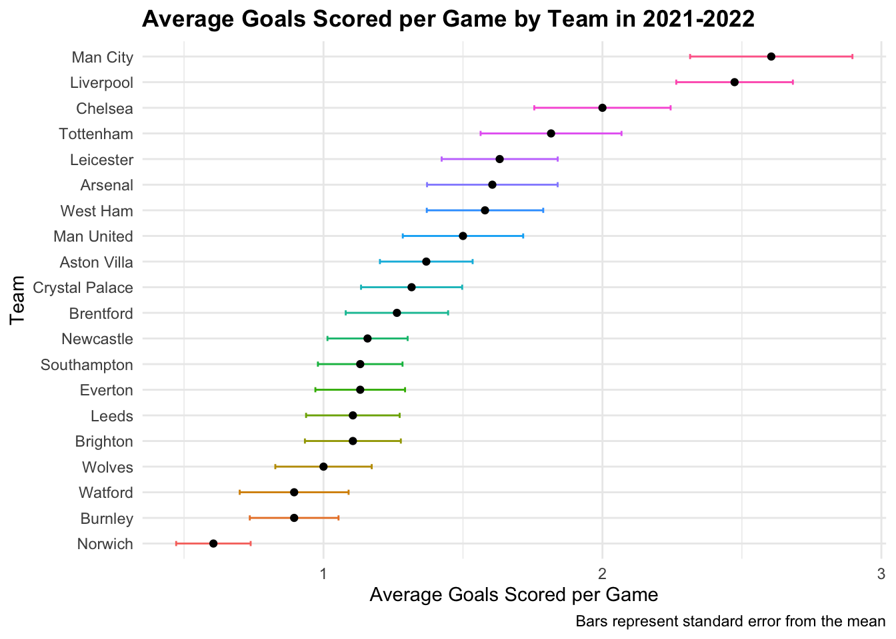
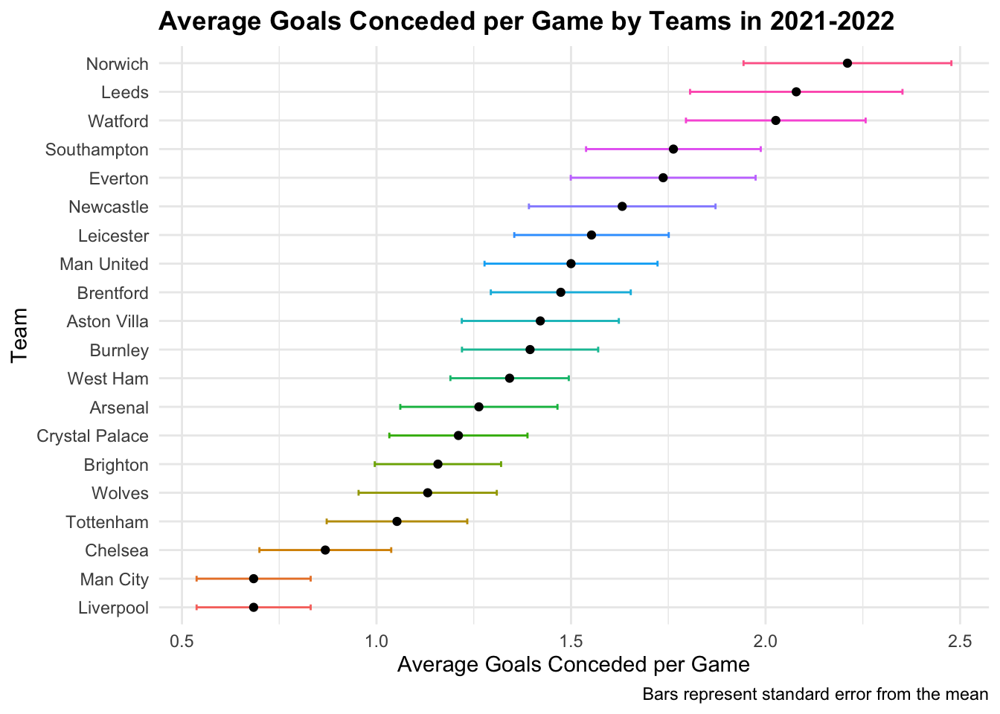
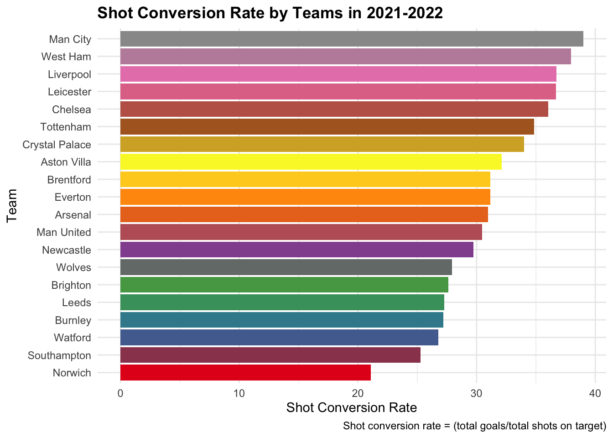

Premier League Investigation
Introduction
Hello, welcome back! As an avid Premier League fan myself, I could not pass up the opportunity to investigate some Premier League data from the 2021-2022 season. This was a memorable season as the title race came down to the final match day with Manchester City claiming the crown over Liverpool by 1 point! The data set comes from Tidy Tuesday’s post on April 4, 2023 and it contains 380 observations. Each season consists of 380 games, where each of the 20 teams play 38 games (every team plays each other both home and away). The bottom three teams that get the lowest amount of points get relegated to the Championship League, which is the league below the Premier League. In this blog post, I will be focusing on visualizing statistics relating to goals! Follow along as I explore how many goals were scored each month, which teams scored the most goals, which teams gave up the most goals and which teams had the highest shot conversion rates!
The variables I will be investigating are:
| variables | description |
|---|---|
| team | the team name |
| month | the month the game took place in |
| goals | the number of goals a team scores in a match |
| goals_against | the number of goals a team gives up in a match |
| shots | the number of shots a team has in a match |
| shots_on_target | the number of shots on goal that a team has in a match |
Total Goals Scored Per Month
This lollipop plot displays in chronological order the months in the season and the total goals scored in that month by all of the teams. The season starts in early August and ends in early May. It is clear from the plot that December was the month with the highest number of goals scored at 104. April was close behind in second place with 100 goals scored. I am not surprised that those two months had the highest number of goals scored. December has the highest number of games played in a month since it is the festive period with the holidays, so with more games there is the opportunity to score more goals. Additionally, I hypothesize that a lot of goals were scored in April because it is almost the end of the season and the regulation battle along with the final push for the championship kicks in and teams are extra motivated to score more goals. From the plot, we also see that five months of the season (August, September, November, January and March) had roughly the same number of goals scored around 60 goals. This is interesting and makes me wonder whether the high number of goals scored in December and April are unusual or typical in a given season. This would be interesting to further investigate with data from past seasons!
Average Goals Scored per Game by Team

This error bar plot shows the average goals scored per game by each team in the Premier League season in 2021-2022. We see that Manchester City and Liverpool lead the league with approximately over 2.5 goals scored per game. This plot is reflective of the final results from the season because Manchester City came in first place and Liverpool came in second place. It seems like for the 2021-2022 season, teams needed to average scoring at least 1 goal per game to avoid regulation. The bottom three teams averaged scoring less than 1 goal per game and consequently they got relegated to the Championship League.
Average Goals Conceded per Game by Team

This error bar plot depicts the average number of goals that a team concedes per game in the 2021-2022 season. From the plot, we see that Norwich gave up the most goals per game with approximately 2.25 goals. It is not surprising that this plot is opposite to the plot above that shows the average number of goals that a team scores in a game. We see that the teams that got relegated had higher average number of goals conceded per game, while Manchester City who won the league conceded on average the fewest amount of goals in the league.
Shot Conversion Rate
| Team | Total Goals | Total Shots on Target | ConversionRate |
|---|---|---|---|
| Man City | 99 | 254 | 38.98 |
| West Ham | 60 | 158 | 37.97 |
| Liverpool | 94 | 256 | 36.72 |
| Leicester | 62 | 169 | 36.69 |
| Chelsea | 76 | 211 | 36.02 |
| Tottenham | 69 | 198 | 34.85 |
| Crystal Palace | 50 | 147 | 34.01 |
| Aston Villa | 52 | 162 | 32.10 |
| Brentford | 48 | 154 | 31.17 |
| Everton | 43 | 138 | 31.16 |
| Arsenal | 61 | 197 | 30.96 |
| Man United | 57 | 187 | 30.48 |
| Newcastle | 44 | 148 | 29.73 |
| Wolves | 38 | 136 | 27.94 |
| Brighton | 42 | 152 | 27.63 |
| Leeds | 42 | 154 | 27.27 |
| Burnley | 34 | 125 | 27.20 |
| Watford | 34 | 127 | 26.77 |
| Southampton | 43 | 170 | 25.29 |
| Norwich | 23 | 109 | 21.10 |

This bar plot shows the shot conversion rate by each team in the 2021-2022 season. Shot conversion rate is defined as the percentage of total goals a team scores divided by the total number of shots on target that a team has. This metric shows how effective a team is at scoring, with higher percentages meaning that when a team shoots, they will most likely score. From the plot, we see that Manchester City has the highest shot conversion rate of close to 40%. On the other hand, we see that Norwich has the lowest shot conversion rate of just over 20%.
Wrap-Up
In this blog post, many statistics surrounding goals were revealed in various visualizations. My personal favorite was the bar plot showing the shot conversion rate by each team because I found it fascinating how the top teams in the league had close to a 40% conversion rate. That number is pretty high and shows how the top teams that win the league score goals when given the chance to! If I had more time and more data, I would love to add the names of players who scored each of the goals in the season. I would love to see which players scored the most goals and to also see which months they tended to score more goals in and whether a pattern existed.
Overall, I really enjoyed data wrangling and creating visualizations with this data set. I liked how I had data from each match, so I could add the variability of the data to the error bar plots examining average goals scored and average goals conceded. I wasn’t able to do this with the previous holiday rating data set and I am glad that I was able to do this here. We learned in class that adding variability to a bar plot or to a lollipop plot allows the reader to see the distribution shape, sample size and any outliers that may be obscuring the data. With the error bars for example, you can see that Manchester City’s upper bound for goals scored and lower bound for goal scored is much larger than the other teams. You would not be able to tell this fact without the error bars added to the plot. In general, I believe that all of my visualizations effectively communicate the information because they are free of clutter, readable and informative. For example, I included text that displays the actual number of goals scored per month in addition to the scale on the x-axis because I think it helps with readability. I also added a table to display the total number of shots on target and the total number of goals scored by each team because it helps show the sample size for the shot conversion rate plot.
Thanks for reading!